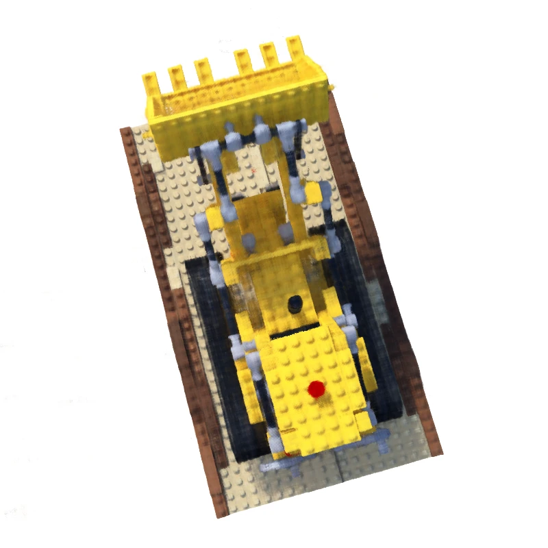

NEURAL RADIANCE FIELDS / RESEARCH CONSOLENeRF_让数学，在屏幕里长出一个世界。从图像、相机与一组坐标出发，让一个神经网络，重新学会看见空间。翻开研究日志 ↗GitHub ↗ o + tdCAMERA ORIGIN x · y · zCONTINUOUS / FIELD LEGO / VAL 000RGB  ITER 050000已记录 Fθ (x, d) → (σ, c) NEURAL SPACE / SPECIMEN 真实输出 · 空间射线为视觉示意 camera_to_world · mat4ray origin → positional encoding → fieldscene memory / reconstructed.